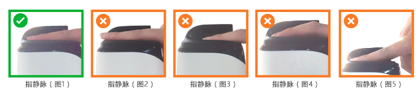

1. 指静脉建模或认证时手指不要超出模具范围；
2. 手指自然放松展平，然后伸入设备（图1）；指尖不可超出设备识别范围（图2）；指尖不可太过靠后（图3）；手指不能弯曲（图4）；不可用力按压（图5）。

3. 手指适当上抬，不要向下挤压手指，不要紧绷用力前伸，尽量放松。感觉不舒服不放松可以晃动调整一下；
4. 根据设备提示进行采集，从左手到右手，每个手指采集一次。
注意：天气寒冷时，如果个别人员手指太冷（或因为女性人员手指太细）采集不成功，请多搓搓手指，以便顺利进行。